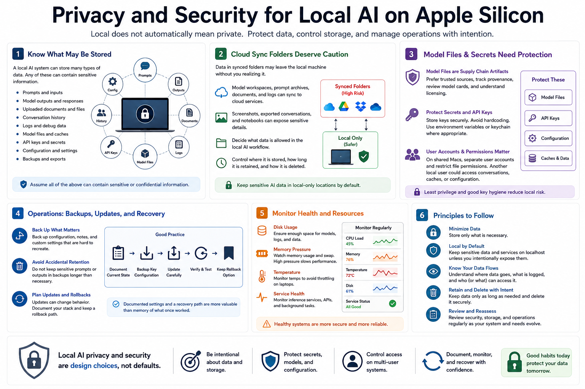

Privacy, Security, and Operations
Connecting to LMS... Progress: in progress

Narration
Privacy and security begin with recognizing what the local AI system may store: prompts, outputs, uploaded documents, conversation history, logs, model files, API keys, configuration, and backups. Any of these can contain sensitive information. Running on a Mac does not automatically make the workflow private if data is later synced, logged, shared, or backed up without control.
Cloud sync folders deserve caution. A model workspace, prompt archive, document collection, or debug log stored in a synced folder may leave the local machine. Screenshots, exported conversations, and notebooks can also expose sensitive details. Decide what data is allowed in the local AI workflow, where it is stored, how long it is retained, and how it is deleted.
Model files are supply chain artifacts. Prefer trusted sources, track provenance, and review licensing. Protect API keys and secrets used by local tools or remote endpoints. On shared Macs, user accounts and file permissions matter because another local user may access conversations, model caches, or configuration if storage is not separated appropriately.
Operations include backups, update and rollback planning, and monitoring. Back up configuration and notes that are hard to recreate, but avoid preserving sensitive prompts forever by accident. Monitor disk usage, memory pressure, temperature, and service health. If a configuration breaks after an update, documented settings and a recovery path are more valuable than memory of what once worked.